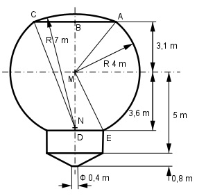

Aufgabe 392 Wie groß ist das Volumen V, das der Behälter für Weizen einschließlich Deckel umfasst?

V = VSchicht1 + VSchicht2 + VZylinder + + VKegelstumpf + VKugelabschnitt Satz von Pythagoras im Dreieck MAB: MA = rKugel = 4 m MA2 = AB2 + MB2 |-MB2 AB2 = MA2 - MB2 = 42 m2 - 3,12 m2 = 6,39 m2 |√ AB = 2,53 m = r1 von Kugelschicht 1 Satz von Pythagoras im Dreieck NBC: BC = AB NC = rKugel1 = 7 m NC2 = NB2 + BC2 | -BC2 NB2 = NC2 - NB2 = 72 m2 - 2,532 m2 = 42,6 m2 |√ NB = 6,53 m hKugelabschnitt = 7 m - 6,53 m = 0,47 m Satz von Pythagoras im Dreieck MDE: ME = rKugel = 4 m ME2 = DE2 + MD2 | -MD2 DE2 = ME2 - MD2 = 42 m2 - 3,62 m2 = 3,04 m2 |√ DE = 1,74 m = r1 von Kugelschicht 2 = = rZylinder = r1 л VSchicht1 = --- * 3,1 * (3*r12 + 3*r22 + 3,1) m3 6 VSchicht1 = л = --- * 3,1 * (3*2,532 + 3*42 + 3,1) m3 = 124,6 m3 6 л VSchicht2 = --- * 3,6 * (3*r12 + 3*r22 + 3,6) m3 6 л VSchicht2 = --- * 3,6 * (3*1,742 + 3*42 + 3,6) m3 6 = = 132 m3 hZylinder = 5 m - 3,6 m = 1,4 m VZylinder = л * rZylinder * hZylinder = = л * 1,742 m2 * 1,4 m = 13,3 m3 VKegelstumpf = л = --- * hKegelstumpf * (r12 + r1 * r2 + r22) 3 r2 = 0,4 m/2 = 0,2 m VKegelstumpf = л = --- * 0,8 * (1,742 + 1,74 * 0,2 + 0,22) m3 = 3 = 2,86 m3 rKugel1 = 7 m л VKugelabschnitt = --- * hKugelabschnitt2 * 3 * (3 * rKugel1 - hKugelabschnitt) л VKugelabschnitt = --- * 0,472 * (3*7 - 0,47) m3 = 3 = 4,75 m3 V = 124,6 m3 + 132 m3 + 13,3 m3 + 2,86 m3 + + 4,75 m3 = 277,5 m3 A = 1,55 m2 + 0,195 m2 - 0,081 m2 = 1,66 m2